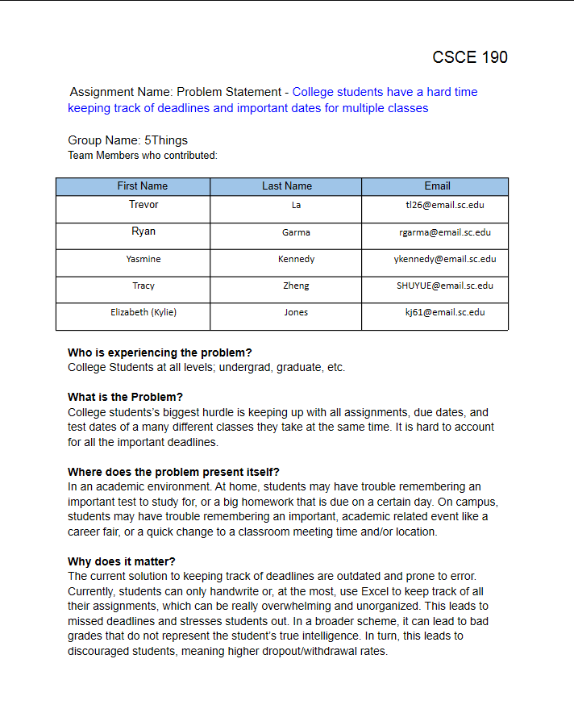
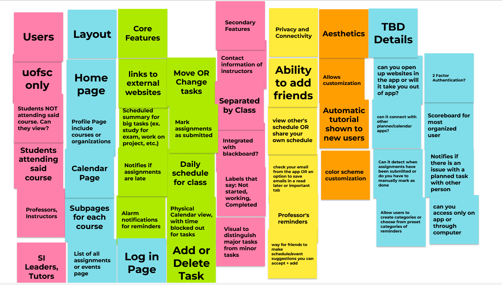
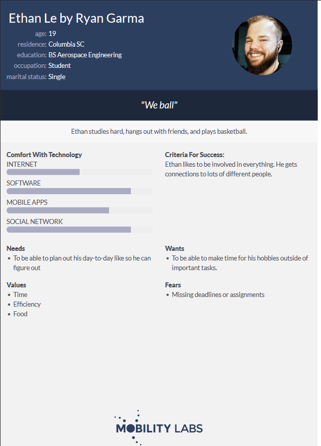
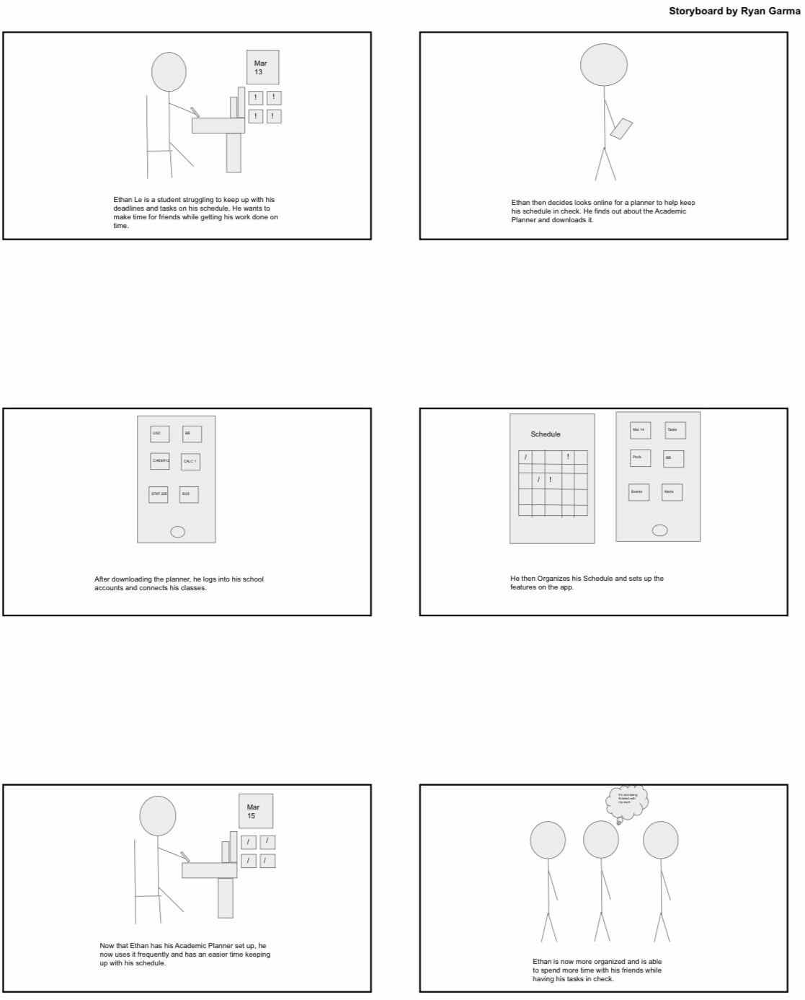
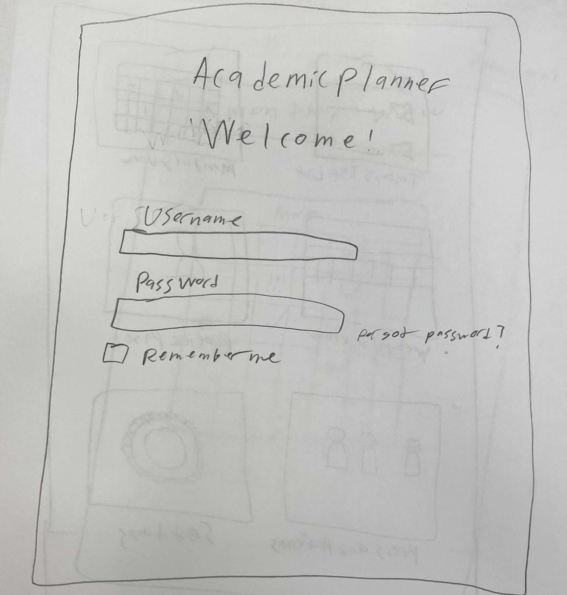
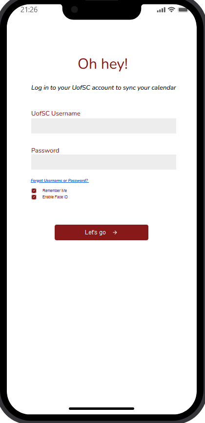

Problem Statement: Academic Planner
College students' biggest hurdle is keeping up with all assignments, due dates, and test dates of a many different classes they take at the same time. It is hard to account for all the important deadlines.
Affinity Diagram: Academic Planner
My group and I came up with some ideas that our Academic Planner could have. Things such as basic needs, to cool features.
5 Personnas: Ethan Le, Daniel Bailey, Emersyn White, Grace Arnold, Yasiyah Gold
Personnas of some academic planner users.
Storyboards
Storyboards of different personas' encounter with the Academic Planner.
Storyboards
Sketches of my group's different layouts for the Academic Planner.
Paper Prototype
Paper walk through of potential look of each screen in app location.
hi-fi Prototype
Hi-Fidelity prototype of academic planner